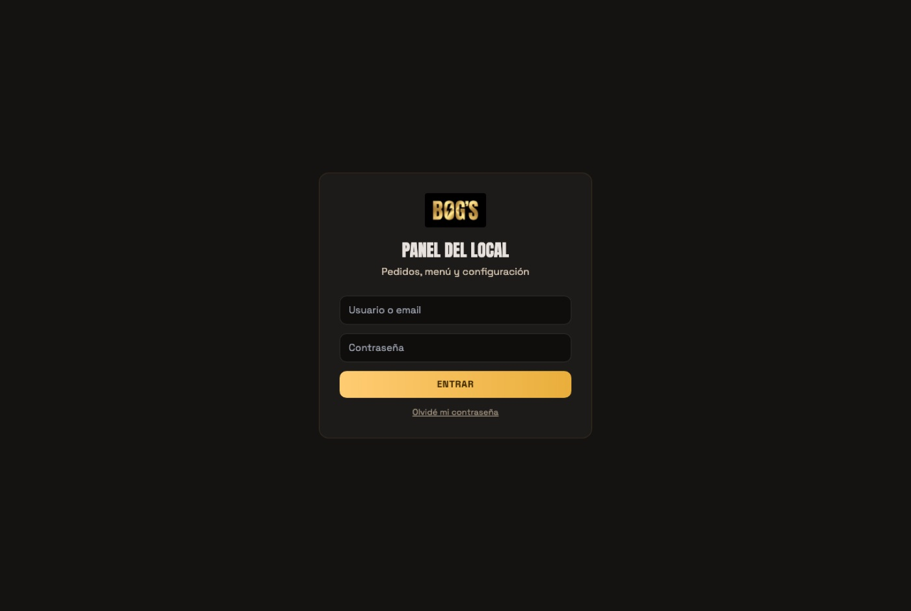
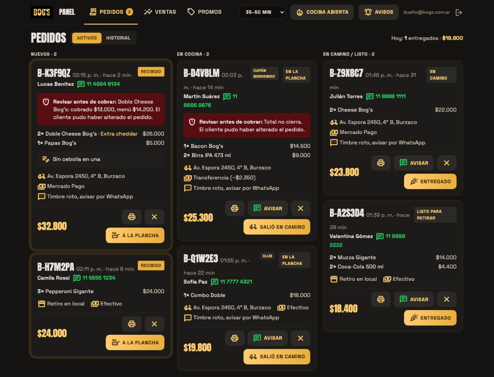
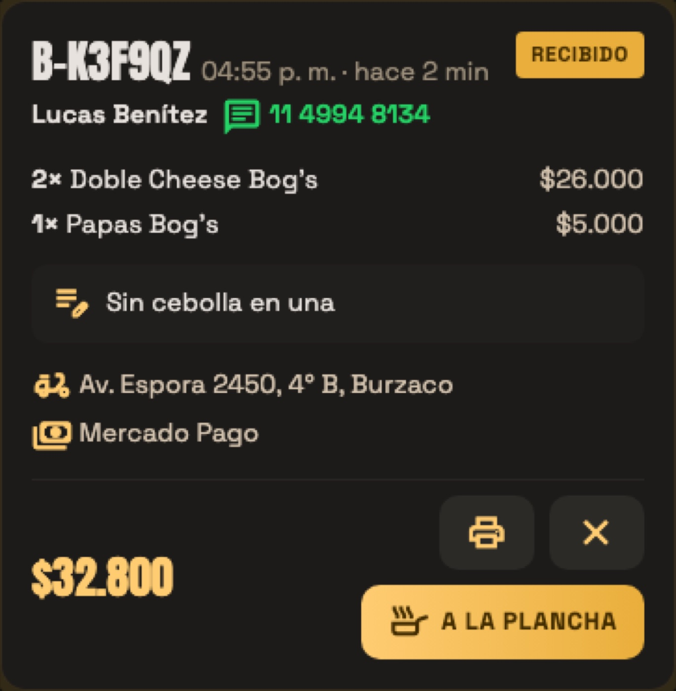
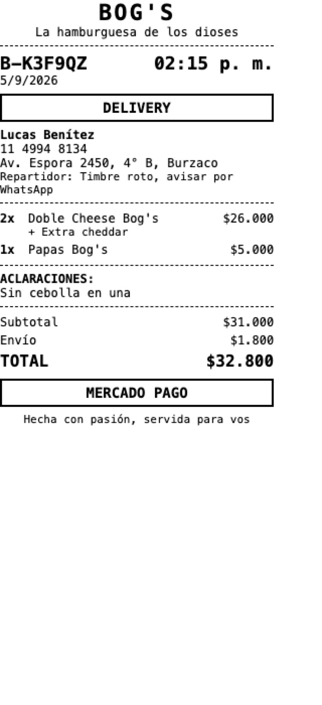
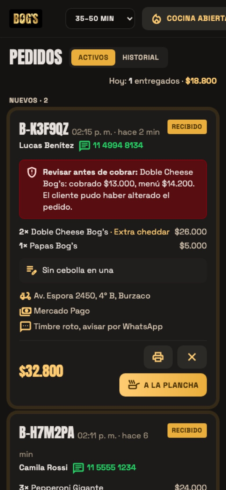
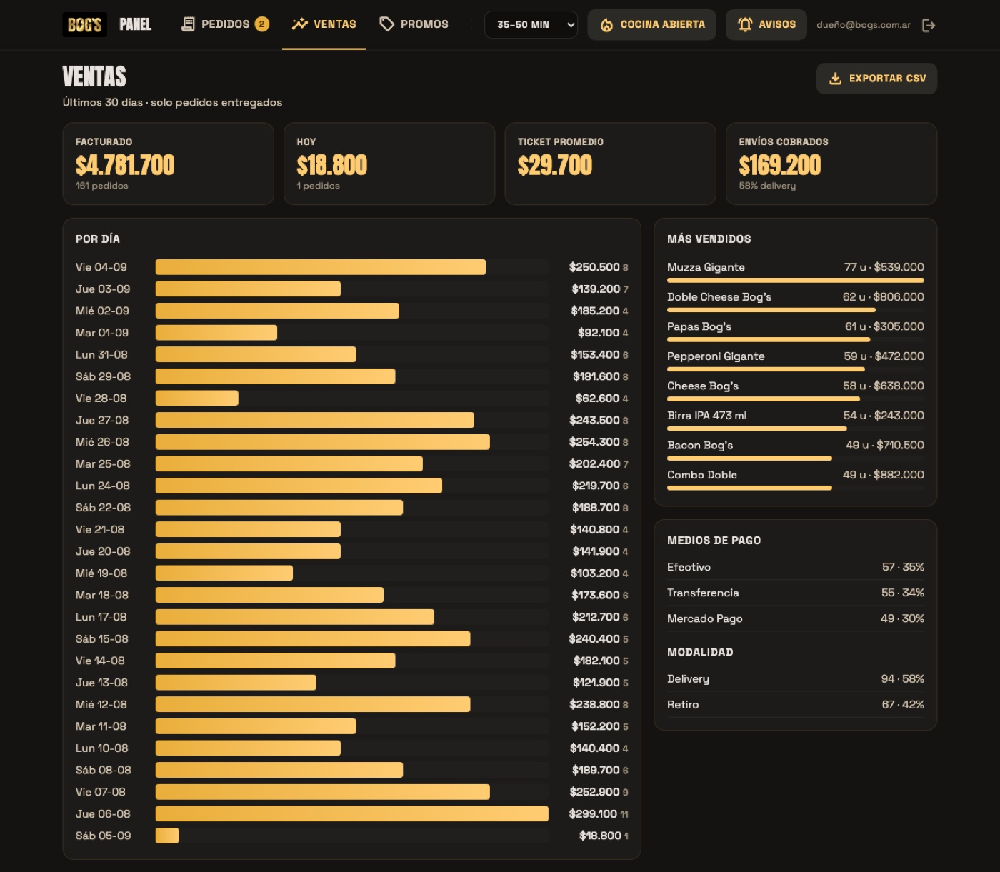
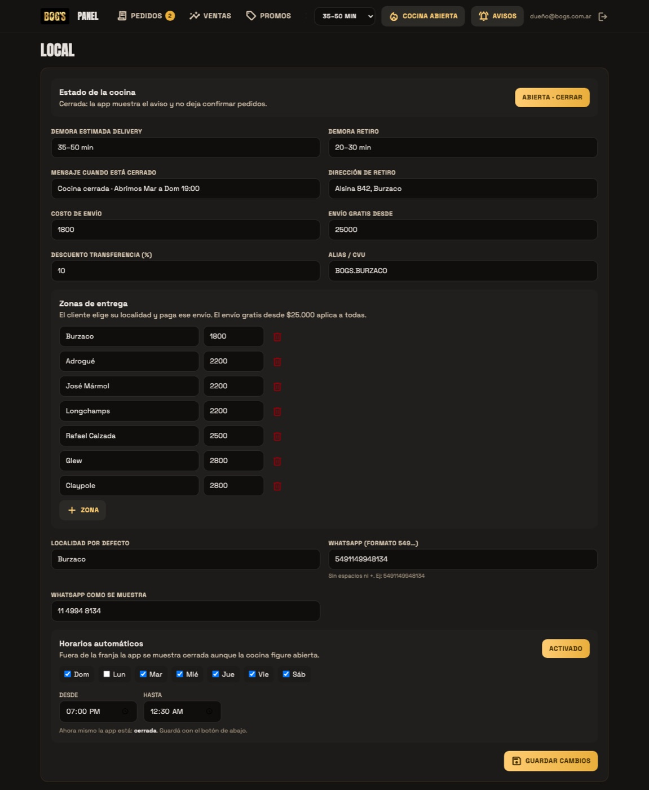
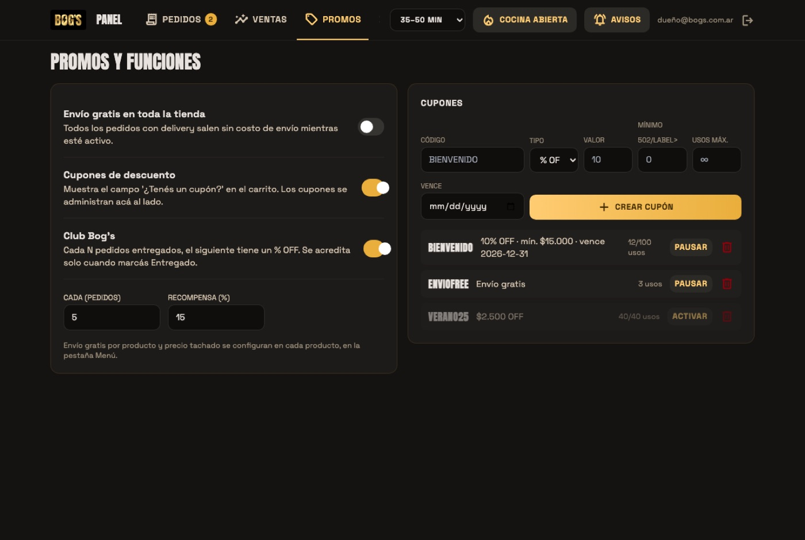
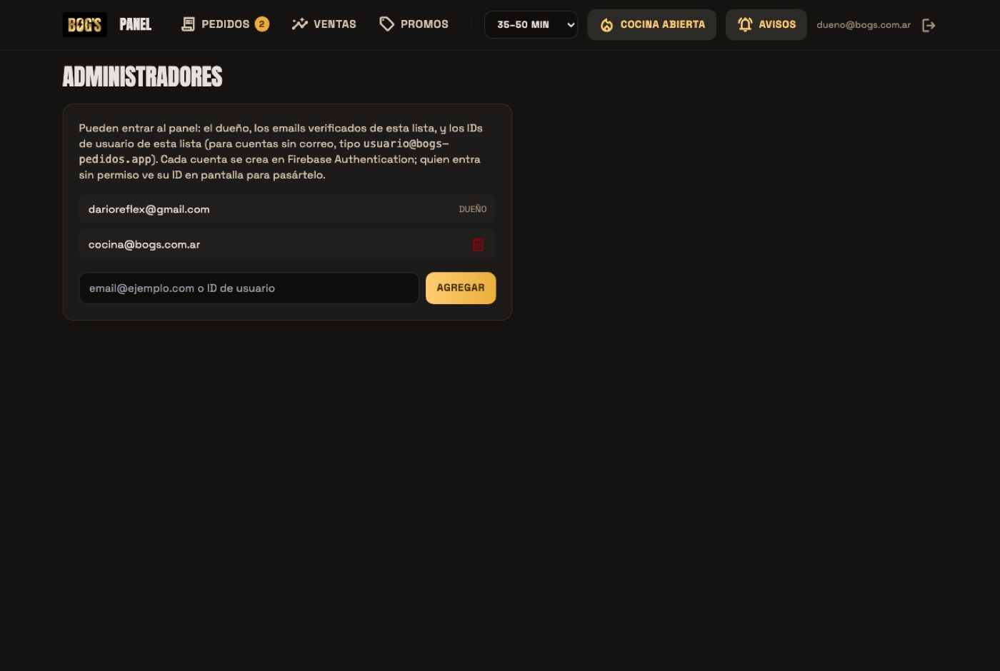
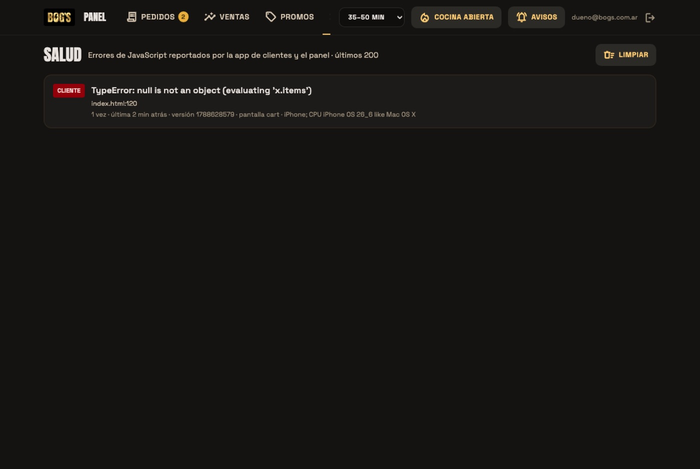

00Puesta en marcha (la primera vez)
Antes de compartir el link con los clientes, dejá la app configurada con los datos reales del local. Son siete pasos y se hacen en una sentada de 30 a 40 minutos. Tené a mano: alias de transferencia, lista de precios, fotos de los productos y las zonas a las que reparten con su costo.
- Entrá al panel y cerrá la cocina. Ingresá con tu usuario, tocá 🔔 Avisos y aceptá el permiso. Después tocá 🔥 Cocina abierta para que pase a Cerrado: así nadie puede pedir mientras cargás los datos.
- Cargá los datos del local en la pestaña Local: alias o CVU para transferencias, dirección de retiro, WhatsApp que recibe los pedidos, demora de delivery y de retiro, costo de envío base, monto para envío gratis (o un número muy alto si no aplica) y el porcentaje de descuento por transferencia. Después las zonas de entrega: borrá las que no correspondan, corregí costos y agregá las que falten. Por último los horarios automáticos: días y franja. Tocá Guardar cambios.
- Depurá el menú en la pestaña Menú. Vienen 14 productos de ejemplo. Para cada uno: si no lo vendés, cambiá el estado a Oculto o borralo con el tachito; si lo vendés, abrí ✏️ Editar ficha y corregí nombre, precio, descripciones y los extras con sus precios. Guardá cada ficha. Agregá los productos que falten con + Producto.
- Subí las fotos. Desde la ficha de cada producto, 📷 Subir foto, con el celular directamente. Las fotos que vienen no son del local: reemplazalas todas. Elegí el Destacado en inicio (una sola) y ordená la lista con las flechas para que lo más vendido quede arriba.
- Decidí las promociones en Promos. Si no querés ninguna, no toques nada: vienen apagadas. Si querés un cupón de lanzamiento, activá Cupones y crealo. Si querés el Club, activalo y definí cada cuántos pedidos y qué descuento.
- Sumá a tu equipo en Admins si alguien más va a atender el panel: necesita una cuenta (la crea soporte) y que agregues su ID en esta pestaña.
- Hacé un pedido de prueba real. Abrí la cocina, entrá a bogs-pedidos.web.app desde tu propio celular y pedí algo como si fueras un cliente. Verificá: te llegó el WhatsApp, sonó el panel, el pedido apareció en Nuevos, lo pasaste a la plancha y viste el cambio en tu celular, imprimiste la comanda, el botón Avisar te abrió el WhatsApp. Al terminar, cancelalo con ✕ para que no sume en Ventas.
01Entrar al panel
El panel es una página web. No hay nada que instalar: funciona en la computadora del local, en una tablet o en el celular.
- Dirección
- bogs-pedidos.web.app/admin
- Usuario
- el que te dieron (por ejemplo
matias) - Contraseña
- la que te dieron; se puede cambiar cuando quieras

- Abrí la dirección en el navegador y guardala como favorito o en la pantalla de inicio.
- Escribí usuario y contraseña y tocá Entrar.
- Arriba a la derecha tocá 🔔 Avisos y aceptá el permiso del navegador. Así, además del sonido, te aparece una notificación por cada pedido nuevo aunque estés en otra ventana.
- Dejá la pestaña abierta durante todo el horario de atención. Los pedidos entran solos, sin recargar.
02Abrir y cerrar el día
En la barra superior del panel están los dos controles que vas a usar todos los días.
Cocina abierta / Cerrado
El botón 🔥 Cocina abierta indica que la app está recibiendo pedidos. Al tocarlo pasa a Cerrado: la app muestra el aviso de cerrado y no deja confirmar pedidos, aunque el cliente puede seguir mirando el menú. Usalo si se corta la luz, se termina la mercadería o cierran antes.
Si en Datos del local activaste los horarios automáticos, la app abre y cierra sola según la franja. Este botón sigue mandando: si lo dejás en Cerrado, no abre aunque sea horario.
Demora estimada
El selector de minutos (por ejemplo 35–50 min) es lo que ve el cliente en la app antes de pedir y en el mensaje de "salió en camino". Ajustalo cuando la cocina está saturada o muy tranquila. Se aplica al instante.
03Atender un pedido
Cuando un cliente confirma en la app pasan dos cosas a la vez: te llega el pedido por WhatsApp al número del local, y aparece en la pestaña Pedidos del panel con sonido y notificación. El panel es el lugar para gestionarlo; el WhatsApp queda como respaldo y para hablar con el cliente.

Qué tiene cada tarjeta

- Código tipo
B-K3F9QZ: es el mismo que ve el cliente. Usalo para hablar del pedido. - Nombre y teléfono: el teléfono es un link que abre el WhatsApp del cliente.
- Ítems con cantidad, extras en dorado y precio. Debajo, las aclaraciones que escribió el cliente.
- Modalidad: 🛵 delivery con la dirección, o 🏪 retiro en local. Y la forma de pago: efectivo, Mercado Pago o transferencia.
El recorrido de un pedido
- Entra el pedido: suena y aparece en Nuevos. Leelo y, si querés, tocá 🖨️ para imprimir la comanda para la cocina.
- Tocá A la plancha. Pasa a En cocina y el cliente ve en su celular "En la plancha".
- Cuando sale, tocá Salió en camino (delivery) o Listo para retirar (retiro). El cliente lo ve al instante.
- Al entregarlo o cuando el cliente lo retira, tocá Entregado. Pasa al historial y suma en Ventas.
Pedidos programados
El cliente puede elegir un día y una hora dentro del horario de atención (por ejemplo "hoy 21:30" o "mañana 20:00"). Estos pedidos entran con una etiqueta ⏰ Programado y se acomodan en una columna aparte, Programados, ordenados por hora. Cuando faltan los minutos de anticipación que configuraste (45 por defecto), pasan solos a Nuevos con sonido y aviso, y ahí los atendés como cualquier otro. La comanda lo dice en grande: "PROGRAMADO PARA HOY 21:30". Fuera del horario de atención, la app no rechaza al cliente: le ofrece programar el pedido para cuando abran.
Avisar al cliente por WhatsApp
Desde En cocina en adelante aparece el botón 💬 Avisar. Abre el WhatsApp del cliente con el mensaje ya escrito según el estado: "ya está en la plancha", "salió en camino, llega en 35–50 min", "está listo para retirar". Solo tenés que tocar enviar. Es opcional; el cliente ve el estado en la app igual.
Imprimir la comanda

El botón 🖨️ abre la comanda en una ventana y dispara la impresión. Trae el código, la hora, DELIVERY o RETIRO bien grande, cliente, dirección, ítems con extras, aclaraciones, totales y cómo cobra: "EFECTIVO · COBRAR" o "TRANSFERENCIA · VERIFICAR COMPROBANTE".
Cancelar un pedido
El botón ✕ lo pasa a Cancelado y desaparece del tablero. Se puede Reabrir desde el historial si fue un error. Avisale al cliente por WhatsApp: la app le muestra "Cancelado".

04Historial y ventas
En Pedidos, el botón Historial muestra los entregados y cancelados. Arriba a la derecha ves cuántos entregaste hoy y cuánto facturaste.

La pestaña Ventas resume los últimos 30 días: facturado, hoy, ticket promedio, envíos cobrados, ventas por día, productos más vendidos, medios de pago y delivery vs retiro. Solo cuenta los pedidos que marcaste como Entregado, así que marcarlos bien importa.
Exportar CSV descarga una planilla con todos los pedidos del período, lista para abrir en Excel: fecha, hora, código, estado, cliente, teléfono, modalidad, dirección, pago, ítems y totales. Sirve para el contador y como copia de seguridad; conviene bajarla una vez por semana.
06Datos del local

- Demora estimada de delivery y de retiro, y el mensaje cuando está cerrado.
- Dirección de retiro: aparece en la app y en los avisos de "listo para retirar".
- Costo de envío base, envío gratis desde (monto del pedido) y descuento por transferencia en porcentaje.
- Alias / CVU: se lo mostramos al cliente que elige transferencia. Revisalo con cuidado.
- WhatsApp: el número que recibe los pedidos, en formato internacional sin espacios (549 + código de área sin 0 + número sin 15). Y cómo se muestra en la app.
Zonas de entrega
Cada zona tiene un nombre (localidad o barrio) y un costo de envío. El cliente elige la suya de una lista y paga ese envío. Agregá con + Zona, borrá con el tachito y guardá. Si no reparten a un lugar, simplemente no lo pongas: el cliente no va a poder elegirlo.
Pedidos programados
Viene activado. Podés apagarlo, cambiar la anticipación mínima (cuántos minutos antes de la hora elegida el pedido pasa a Nuevos y cuál es el turno más cercano que se puede elegir) y hasta cuántos días hacia adelante se puede programar. Los turnos salen de la franja de los horarios automáticos, así que conviene tenerla cargada aunque no la actives.
Horarios automáticos
Activalo y marcá los días y la franja (por ejemplo 19:00 a 00:30; las franjas que cruzan la medianoche funcionan). Fuera de ese horario la app se muestra cerrada y avisa cuándo abre. Debajo te dice si en este momento la app está abierta o cerrada según lo que configuraste. Guardá con Guardar cambios.
07Promociones

Envío gratis en toda la tienda
Mientras esté activo, todos los pedidos con delivery salen sin costo de envío. Ideal para un lanzamiento o un fin de semana especial. Acordate de apagarlo.
Cupones
Al activarlos, en el carrito aparece el campo "¿Tenés un cupón?". Los creás en la misma pestaña:
- Escribí el código (por ejemplo BIENVENIDO; se guarda en mayúsculas).
- Elegí el tipo: porcentaje de descuento, monto fijo o envío gratis. Cargá el valor.
- Opcional: mínimo de compra, usos máximos y fecha de vencimiento.
- Tocá Crear cupón. En la lista ves cuántas veces se usó, y podés Pausar o borrar.
Club Bog's
Un programa de fidelidad automático: cada N pedidos entregados, el siguiente tiene un porcentaje de descuento. Configurás "cada cuántos" y "cuánto". Se lleva por número de WhatsApp: el cliente ve su progreso en la app y el premio se aplica solo. El punto se suma cuando marcás el pedido como Entregado, así que otra razón para no saltearse ese paso.
08Equipo y accesos

Para que otra persona use el panel necesita dos cosas: una cuenta con contraseña, que la crea quien administra el sistema, y estar en esta lista. Si alguien entra con una cuenta válida pero todavía no está en la lista, ve una pantalla con su ID de usuario: pedile que te lo pase, pegalo en el campo y tocá Agregar. Para sacar a alguien, el tachito. Vos siempre podés entrar.
09Salud del sistema

No hace falta mirarla todos los días. Si un cliente te dice que la app "no le anda", entrá acá: si hubo un error, aparece con la pantalla donde pasó, el tipo de celular y cuántas veces se repitió. Mandale una captura a quien da soporte y con eso alcanza para arreglarlo. Cuando está vacía, todo va bien.
10Si algo no anda
| Qué pasa | Qué hacer |
|---|---|
| No suena cuando entra un pedido | La pestaña tiene que estar abierta y haber tenido al menos un toque desde que la abriste (los navegadores bloquean el sonido si no). Activá 🔔 Avisos para tener también la notificación. |
| Un cliente dice que la app se ve mal o vieja | Que cierre la pestaña del navegador y vuelva a abrir el link. La app se actualiza sola, pero una pestaña abierta hace días puede quedar con la versión anterior. |
| Un pedido tiene el cartel rojo | Confirmá el total con el cliente por WhatsApp antes de cobrar. Si el total correcto es otro, cobrá el correcto y anotalo en la comanda. |
| La app dice "cerrado" y es horario | Mirá el botón de la barra superior: si dice Cerrado, tocalo. Si dice Cocina abierta, revisá los horarios automáticos en Local. |
| Olvidé la contraseña | Si tu usuario tiene un correo real, "Olvidé mi contraseña" en el login te manda un enlace. Si es un usuario sin correo, pedile a quien administra el sistema que la cambie. |
| Entró un pedido falso o de broma | Cancelalo con ✕. Si se repite desde el mismo número, avisá a soporte para bloquearlo. |
| Se cortó internet en el local | Los pedidos siguen llegando al WhatsApp del celular. Cuando vuelva la conexión, el panel se pone al día solo. |